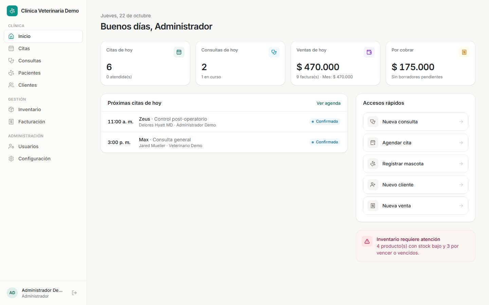
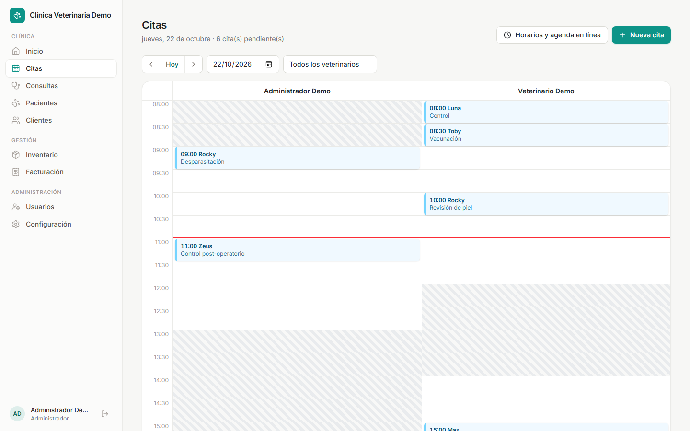
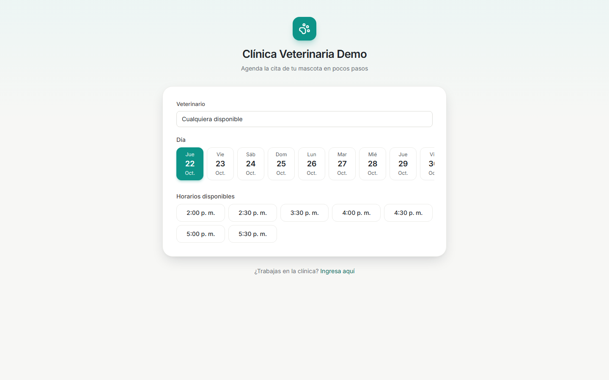
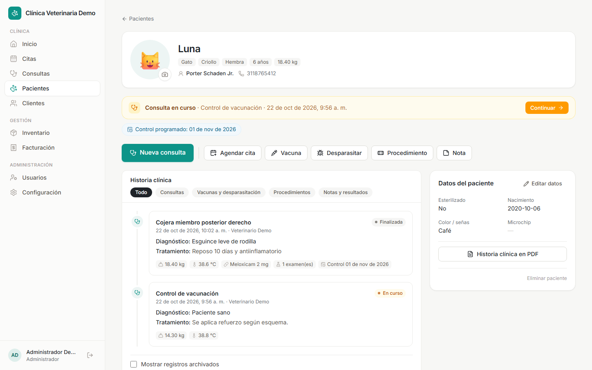
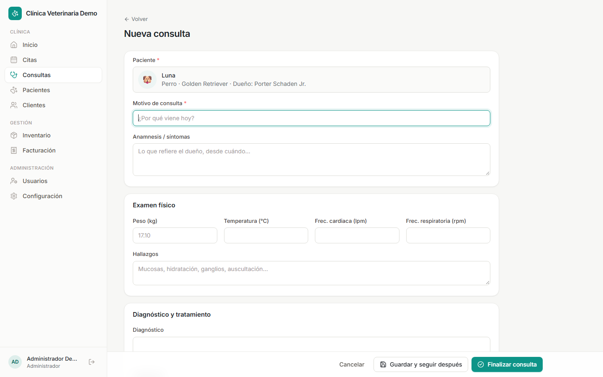
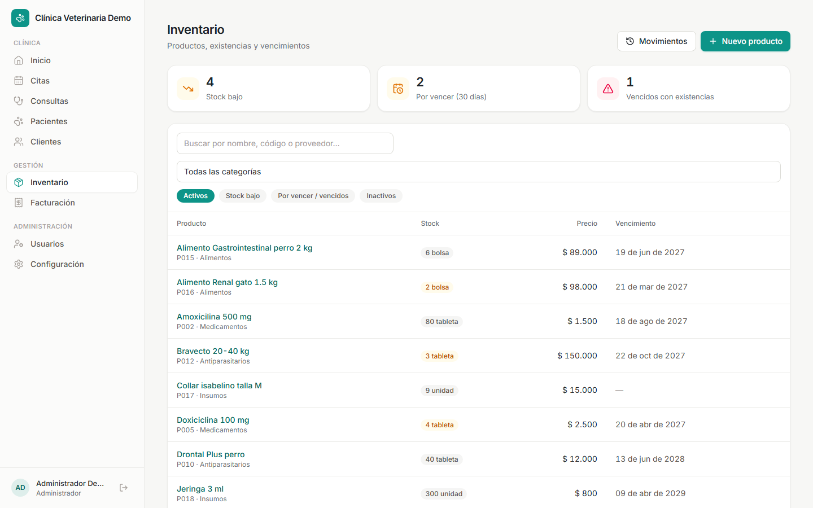
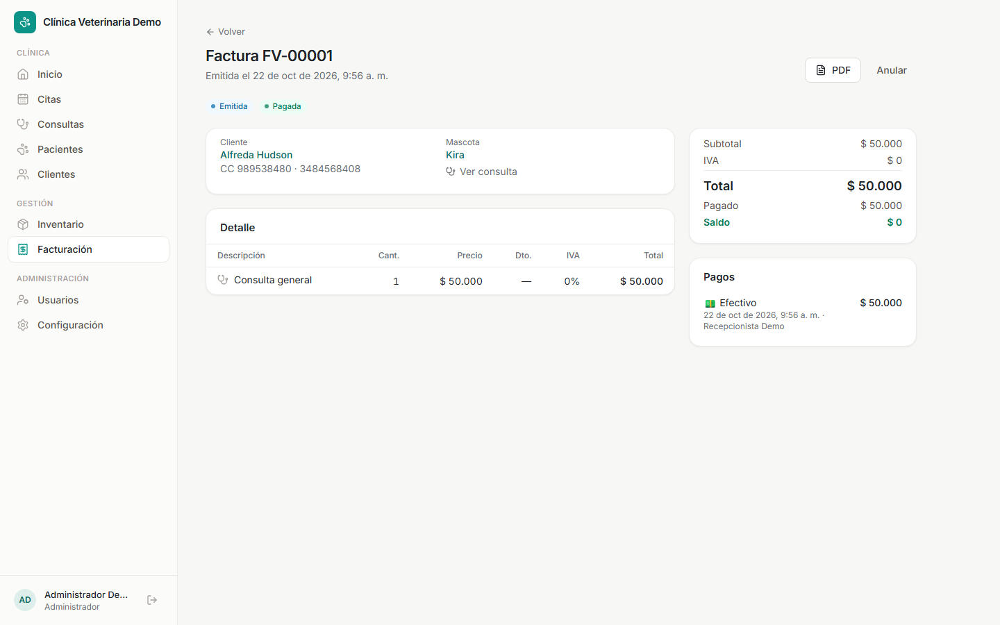

Documentación para el equipo comercial
Plataforma de gestión
para clínicas veterinarias
Qué es, qué hace cada módulo, cómo presentarlo a una clínica y qué responder a las preguntas más comunes.

Versión del producto: MVP + agenda · Octubre de 2026
Documento vivo: se actualiza con cada nueva fase
1 · En una página
¿Qué estamos vendiendo?
Un sistema en la nube, que se usa desde el navegador, para que una clínica veterinaria maneje todo su día a día en un solo lugar: citas, historia clínica, recetas, inventario de medicamentos, facturación y cobros. Cada clínica tiene su propio espacio, con su logo y sus colores, en una dirección propia (por ejemplo miclinica.plataforma.com).
¿Para quién es?
Clínicas pequeñas y medianas
De 1 a 10 personas, que hoy llevan la información en cuadernos, Excel o programas separados.
Veterinarios independientes
Que atienden con agenda y necesitan historia clínica ordenada y recetas profesionales.
Clínicas con farmacia o tienda
Que venden medicamentos, alimentos o accesorios y necesitan controlar stock y vencimientos.
El problema que resolvemos
- La historia clínica está en papel o repartida: cuesta encontrar qué se le hizo a la mascota la última vez.
- Las vacunas vencen y nadie se entera; los controles se olvidan.
- El inventario no cuadra: medicamentos vencidos, faltantes, ventas que no descuentan.
- La agenda vive en un cuaderno o en el WhatsApp de la recepcionista.
- No hay forma de saber quién hizo qué (descuentos, anulaciones, cambios de precio).
Seis razones para elegirnos
1Pensado para el médico. La ficha de cada mascota muestra de un vistazo alergias, vacunas vencidas, controles pendientes y la consulta en curso.
2Todo conectado. La cita se vuelve consulta, la consulta se vuelve receta y factura, y la factura descuenta el inventario. Sin digitar dos veces.
3Agenda en línea. Los dueños piden cita desde un enlace, sin crear cuenta, y la clínica confirma por WhatsApp con un clic.
4Con la marca de la clínica. Logo, colores y datos legales en la pantalla, en la agenda pública y en todos los PDF.
5Control y seguridad. Permisos por rol, registro de auditoría y una historia clínica que nunca se borra.
6Nada que instalar. Funciona en el navegador del computador, la tableta o el celular.
2 · Cómo se usa
Un día en la clínica, de punta a punta
Este es el recorrido que más convence en una demo, porque muestra que cada paso alimenta al siguiente.
1
CitaEl dueño agenda en línea o la recepción la crea2
ConfirmaciónSe confirma y se avisa por WhatsApp con un clic3
ConsultaEl médico la inicia desde la cita y registra todo4
DocumentosReceta y orden de exámenes en PDF5
FacturaSe arma sola con la consulta y lo que se lleva6
CobroPago y descuento automático del inventario
Lo que pasa automáticamente
- Al iniciar la consulta desde la cita, esta queda atendida.
- El peso registrado en la consulta actualiza el peso de la mascota.
- Las vacunas aplicadas quedan en la historia con su próxima dosis.
- Al facturar, la consulta se finaliza y el stock se descuenta.
- Si un producto no alcanza, la factura no se emite y se avisa.
Lo que ya no se olvida
- Alergias, visibles en cada pantalla donde se atiende a la mascota.
- Vacunas y desparasitaciones vencidas o por vencer.
- Controles programados que el paciente no ha cumplido.
- Productos con stock bajo, por vencer o vencidos.
- Facturas con saldo pendiente por cobrar.
Pantalla de inicio
Al entrar, cada persona ve un tablero con lo que le importa según su rol (es la imagen de la portada): citas del día, consultas en curso, ventas del día y del mes, cartera por cobrar, próximas citas, accesos rápidos y alertas de inventario. Una recepcionista no ve las ventas; un asistente no ve la facturación.
Cómo venderlo: "Abra el sistema en la mañana y en 10 segundos sabe cómo va su día: a quién atiende, cuánto ha vendido y qué le falta en la bodega."
3 · Módulos en detalle
Citas y agenda en línea
La agenda del día muestra una columna por veterinario, con sus horarios de atención. Las zonas rayadas son horas en que no atiende, y una línea roja marca la hora actual.

Para la recepción
- Un clic en un espacio libre crea la cita.
- Estados: solicitada, confirmada, atendida, cancelada, no asistió.
- Reprogramar o cambiar de veterinario; el sistema nunca deja cruzar dos citas del mismo médico.
- Horario semanal por veterinario, con varios bloques por día (mañana y tarde).
- Duración de la cita configurable (15, 30, 45 minutos…).
Aviso por WhatsApp
- Al confirmar, crear o cancelar una cita aparece el botón "Enviar por WhatsApp".
- Abre el chat del cliente con el mensaje ya escrito: mascota, fecha, hora, veterinario y dirección.
- También hay botón de recordatorio para el día anterior.
- La clínica personaliza los mensajes con su propio tono.
Agenda en línea para los dueños de mascotas
Cada clínica tiene un enlace público (por ejemplo miclinica.plataforma.com/agendar) para compartir en WhatsApp, Instagram o Google Maps. El dueño, sin crear cuenta ni contraseña, elige veterinario (o "cualquiera disponible"), día y hora libre, y deja sus datos y los de su mascota.

- Solo muestra horarios realmente libres, según el horario de cada médico.
- La solicitud llega a la clínica como "Solicitada" y aparece destacada en la agenda para confirmarla.
- Si el dueño ya es cliente, el sistema lo reconoce por cédula o teléfono.
- Si es nuevo, el cliente y la mascota se registran solos al confirmar (así no entra información basura).
- La clínica define con cuánta anticipación y hasta cuántos días adelante se puede reservar, o apaga la agenda en línea.
- Protegido contra abuso: límite de intentos y filtro anti-robots.
Cómo venderlo: "Sus clientes pueden pedir cita a las 11 de la noche, sin llamar. Usted la confirma en la mañana con un clic y les llega por WhatsApp."
Pacientes, clientes e historia clínica
La ficha de la mascota es la pantalla más importante para el médico: en un vistazo ve quién es, sus alertas y toda su historia.

Resumen clínico (arriba)
- Alergias, en rojo, siempre visibles.
- Consulta en curso, con botón "Continuar".
- Próxima cita, control programado o vencido.
- Vacunas y desparasitaciones vencidas o próximas a vencer.
Acciones rápidas
- Nueva consulta (botón principal) y Agendar cita.
- Registro rápido de vacuna, desparasitación, procedimiento o nota, sin abrir una consulta completa.
Historia clínica
- Línea de tiempo con todo: consultas, vacunas, procedimientos, notas y evolución.
- Filtros: consultas, vacunas y desparasitación, procedimientos, notas.
- Nunca se borra: un registro equivocado se archiva y sigue consultable.
- Adjuntos privados: exámenes, radiografías, PDF, Word, Excel.
- Historia clínica completa en PDF para entregar al dueño o a otro colega.
Clientes
- Búsqueda por nombre, cédula, teléfono o email; una persona puede tener varias mascotas.
Consultas
El formulario muestra lo esencial y deja lo opcional plegado, para que el médico registre una consulta en minutos.

Siempre visible
- Motivo y anamnesis (lo que cuenta el dueño).
- Signos vitales: peso, temperatura, frecuencia cardiaca y respiratoria.
- Hallazgos del examen físico, diagnóstico y tratamiento.
Secciones que se abren si se necesitan
- Medicamentos: dosis, frecuencia, duración y vía. Si están en inventario se vinculan y se marca "Lo lleva" con la cantidad, para facturarlo.
- Exámenes solicitados, con registro posterior del resultado.
- Vacunas o desparasitación aplicadas, con su próxima dosis.
- Indicaciones para el dueño y fecha de control.
Dos botones al final
- Guardar y seguir después: la consulta queda "en curso" (por ejemplo, mientras llegan exámenes).
- Finalizar consulta: queda cerrada. Después solo se agregan notas de evolución y resultados, para proteger la historia.
Documentos que genera
- Fórmula médica / receta con medicamentos, indicaciones, control y firma.
- Orden de exámenes.
- Todos con el logo, NIT, dirección y color de la clínica.
Cómo venderlo: "La receta sale impresa, legible y con su logo. Y queda guardada: la próxima vez sabe exactamente qué le formuló."
Inventario
Control de medicamentos, vacunas, alimentos e insumos, con alertas para que nada se venza ni se agote sin aviso.

- Producto con código, categoría, proveedor, unidad, costo, precio, IVA (0, 5 o 19%), stock mínimo y vencimiento. El margen de ganancia se calcula solo.
- Entradas de compra con factura del proveedor, lote y vencimiento.
- Salidas con motivo (uso interno, vencido, dañado, devolución).
- Ajuste por conteo: se escribe lo que hay en la bodega y el sistema registra la diferencia.
- Alertas de stock bajo, por vencer (30 días) y vencidos con existencias.
- Kardex: historial de cada movimiento, con quién lo hizo y el saldo resultante.
- El stock nunca queda negativo y las ventas se descuentan solas al facturar.
- Los productos no se borran: se desactivan y conservan su historial.
Facturación y cobros
Desde la consulta, el botón "Facturar" arma la cuenta sola: el servicio de consulta más los productos que el cliente se lleva. La recepción revisa, ajusta y emite.

- Factura por consulta, venta de mostrador o combinada; catálogo de servicios con precio (consulta, vacunación, cirugía…).
- Descuento por línea e IVA por producto o servicio; totales automáticos.
- Numeración consecutiva propia de cada clínica (prefijo y número).
- Estados: borrador (editable), emitida, anulada (con motivo, devuelve el stock y nunca se borra).
- Pagos en efectivo, tarjeta, transferencia, Nequi o Daviplata; abonos parciales y saldo pendiente.
- Se puede cobrar en el mismo momento de emitir.
- Factura en PDF con la marca de la clínica.
- Filtro de facturas por cobrar y cartera total en el tablero.
Importante: hoy la factura es un comprobante interno de venta. No es factura electrónica ante la DIAN (está en el plan de desarrollo). El PDF lo indica en su pie de página. No prometer facturación electrónica todavía.
Administración, marca y seguridad
Usuarios
- Crear usuarios, asignar rol, restablecer contraseña, ver el último ingreso.
- Desactivar a alguien cierra sus sesiones al instante.
- La clínica nunca se queda sin un administrador.
Roles y permisos
- Cinco roles listos: administrador, veterinario, recepcionista, asistente, contador.
- Matriz para ajustar qué puede ver, crear, editar o anular cada rol.
- Roles personalizados (por ejemplo "peluquero").
Marca de la clínica
- Nombre, razón social, NIT, dirección, teléfono y email.
- Logo y color institucional, con vista previa.
- Se reflejan en el sistema, el login, la agenda pública y los PDF.
Auditoría
- Registro de quién hizo qué, cuándo y desde dónde.
- Ingresos (y fallidos), facturas emitidas y anuladas, pagos, ajustes de inventario, cambios de precio, permisos y configuración.
- Muestra el valor antes y después de cada cambio.
Qué puede hacer cada rol (configuración inicial)
| Módulo | Administrador | Veterinario | Recepcionista | Asistente | Contador |
|---|
| Pacientes y clientes | Todo | Ver, crear, editar | Ver, crear, editar | Ver, crear, editar | Ver |
| Consultas e historia | Todo | Todo | Ver | Ver | — |
| Citas | Todo | Todo | Todo | Todo | — |
| Inventario | Todo | Ver | — | Ver | Ver |
| Facturación | Todo | Ver | Facturar y cobrar | — | Todo (incl. anular) |
| Usuarios y configuración | Todo | — | — | — | Ver configuración |
Cada clínica puede cambiar estos permisos desde Usuarios → Roles y permisos.
Seguridad y confiabilidad
- Cada clínica está aislada: una clínica jamás puede ver datos de otra, ni con un enlace directo (está probado con pruebas automáticas).
- La historia clínica, las facturas y los productos no se borran; se archivan o se anulan dejando rastro.
- Adjuntos clínicos privados: solo se descargan con sesión iniciada en la clínica.
- Más de 70 pruebas automáticas verifican las reglas del negocio en cada cambio.
4 · Preguntas frecuentes
Lo que preguntan las clínicas (y qué responder)
Respuestas honestas. Es mejor decir "está en camino" que prometer algo que aún no existe.
¿Hay que instalar algo?
No. Se usa desde el navegador (Chrome, Edge, Safari) en computador, tableta o celular. Solo necesita internet.
¿Emite factura electrónica DIAN?
Todavía no. Hoy emite un comprobante interno de venta en PDF. La facturación electrónica está en el plan de desarrollo. Mientras tanto, la clínica puede seguir usando su proveedor DIAN actual.
¿Los mensajes de WhatsApp salen solos?
Hoy se envían con un clic: el sistema abre el chat con el mensaje listo y la persona solo pulsa "Enviar". Sale desde el WhatsApp de la clínica, así que el cliente responde a ese mismo número. El envío 100% automático (API oficial de WhatsApp) está planeado como función adicional.
¿Mis datos están separados de las otras clínicas?
Sí. Cada clínica tiene su propio espacio aislado; ninguna puede ver la información de otra.
¿Puedo poner mi logo y mis colores?
Sí, desde Configuración. Se ven en el sistema, en la página para agendar citas y en todos los documentos PDF.
¿Qué pasa si alguien se equivoca o borra algo?
Lo clínico y lo contable no se borra: se archiva o se anula y queda registrado quién lo hizo. El administrador puede revisarlo en Auditoría.
¿Puedo controlar qué ve cada empleado?
Sí. Hay roles listos (veterinario, recepción, asistente, contador) y el administrador puede ajustar los permisos de cada uno.
¿Sirve si tengo varias sedes?
Hoy cada sede funciona como una clínica independiente. El manejo de varias sedes bajo una misma cuenta está en el plan de desarrollo.
¿Pueden pasar mi información actual al sistema?
La migración de datos (clientes, mascotas, productos) se ofrece como parte del servicio de puesta en marcha; se evalúa según el formato en que la clínica tenga su información.
¿Tiene reportes?
Hoy el tablero muestra ventas del día y del mes, cartera, citas y alertas. Los reportes detallados (financieros, de inventario, exportación a Excel) están en el plan de desarrollo.
5 · Estado y próximos pasos
Qué está listo y qué viene
| Funcionalidad | Estado | Notas |
|---|
| Pacientes, clientes, consultas e historia clínica | Listo | Incluye adjuntos, vacunas y documentos PDF. |
| Citas por veterinario y agenda en línea | Listo | Con aviso por WhatsApp de un clic. |
| Inventario con alertas y kardex | Listo | |
| Facturación interna, cobros y PDF | Listo | Comprobante interno, no DIAN. |
| Usuarios, roles, marca y auditoría | Listo | |
| Publicación en internet (servidor, dominio, SSL, copias de seguridad) | Siguiente | Necesario para la primera clínica real y para demos en línea. |
| Uso desde el celular | Listo | Revisado en pantalla de celular (390 px). |
| Recordatorios automáticos de citas (email) | Planeado | |
| Reportes financieros y de inventario | Planeado | Con exportación. |
| WhatsApp automático (API oficial de Meta) | Planeado | Requiere registro de la clínica en Meta; tiene costo por mensaje. |
| Factura electrónica DIAN | Planeado | Prioridad comercial alta. |
| Varias sedes, pagos en línea, laboratorio | Planeado | |
Planes sugeridos (propuesta, sin precios definidos)
Básico
Clínica pequeña
- 1 clínica, hasta 3 usuarios
- Pacientes, consultas e historia
- Inventario y facturación básica
- Documentos PDF
- Soporte estándar
Profesional
Clínica con equipo
- 5 a 10 usuarios
- Todo lo del Básico
- Agenda en línea y WhatsApp
- Roles personalizados y auditoría
- Soporte prioritario
Premium
Varias sedes o alto volumen
- Usuarios ilimitados
- Todo lo del Profesional
- Funciones nuevas primero (WhatsApp automático, reportes)
- Migración de datos incluida
- Soporte especializado
Modalidad mensual o anual, más un servicio inicial de puesta en marcha (configuración, marca, migración y capacitación).
6 · Guion de demostración
Demo de 10 minutos que vende
Orden recomendado. La idea es contar la historia de una mascota real durante un día, no recorrer menús.
- Inicio (1 min). "Esto es lo primero que ve en la mañana": citas de hoy, ventas, cartera y alertas.
- Agenda en línea (1 min). Abra el enlace /agendar en el celular y pida una cita como si fuera un cliente. Muestre que no pide cuenta ni contraseña.
- Confirmar y avisar (1 min). En Citas aparece la solicitud. Confírmela y pulse "Enviar por WhatsApp": el mensaje sale listo.
- Ficha de la mascota (2 min). Muestre las alertas (alergias, vacuna vencida, control pendiente) y la línea de tiempo. Registre una vacuna con un clic.
- Consulta (2 min). Inicie la consulta desde la cita, llene signos y diagnóstico, agregue un medicamento del inventario y marque "Lo lleva". Imprima la receta en PDF.
- Factura (2 min). Pulse "Facturar": la cuenta ya trae la consulta y el medicamento. Emita y cobre por Nequi. Muestre que el inventario bajó solo.
- Cierre (1 min). Configuración: cambie el logo y el color en vivo. "Así se verá con su marca." Mencione roles y auditoría.
Frase de cierre: "Todo lo que hoy tiene en cuadernos, Excel y WhatsApp, en un solo lugar, con su marca, y sin instalar nada."
Antes de una demo con clientes: hoy el sistema corre en el equipo de desarrollo. Para demos en línea hay que completar la publicación en internet (siguiente fase). Coordine con el equipo técnico; los usuarios y claves de demostración están en el archivo ROADMAP.md del proyecto.